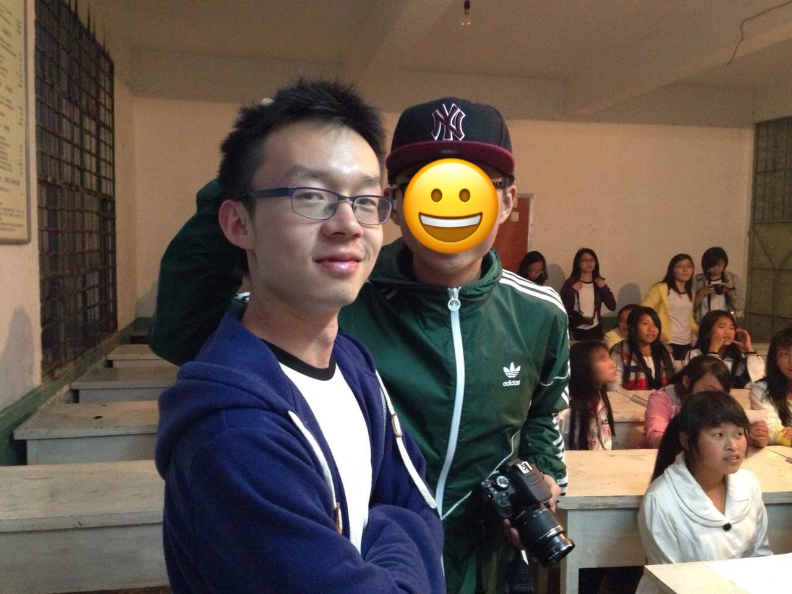

I was born in Gejiu, an underdeveloped rural city in China that solely relies on tin excavation as its source of economic support. My early educational environment was unideal due to the city’s fixation on exploiting its natural resource reserves instead of investing into sustainable socio-economic development. Many residents of the city lived below the poverty line, with little access to resources that were controlled in the power of only the few who had strong ties to the government. Having experienced the Resource Curse, a term coined by Richard Auty to describe the counterintuitive phenomenon in which resource-abundant countries witness slower development, I resolved to change my life and bring value to society independent of natural resources.
During my first undergraduate degree, I volunteered in a teaching program for an underrepresented Thai community in Hong Kong and worked with children who are unable to pursue higher education due to their family’s economic status. Despite this, all the children I worked with had a strong desire to learn. For the first time, I realized how fortunate I am to enjoy the privilege of a university education. Knowing that there are many more underserved populations around the world, a sense of equality compelled me to do more to make a positive impact in the lives of others.
In the summer of 2014, I went on a voluntary teaching trip to Wangzishu, a remote village in my home province, Yunnan. As a short-term Math and English teacher at Wangzishu Middle School, I observed an absence of available educational resources due to the village’s isolation from the nearest city, three-hours away by car. Few teachers are willing to work under the village’s impoverished conditions, and consequently, students fall far behind China’s national teaching agenda; some teenagers even lack basic literacy skills such as reading and coherent speech. In the history of Wangzishu Middle School, not a single student has ever received post-secondary education. Most students discontinue their education after middle school to help their parents with farming and household chores. For some of the students, that's what they aspire to do for the rest of their lives as there are no other options.
 We are giving a crash course about constellationAfter I left Wangzishu, I continued thinking about the poverty-stricken and underserved children I met. Certainly, I will continue my voluntary teaching. However, as a science student, I can do more than simply teach. I can make use of technology to help young minds embrace a world with a myriad of possibilities apart from routine labor. Computer Science are about fostering ideas, developing theories and real-world applications which can contribute to a more efficient, accessible and equitable community. Technological advancement is a driving factor in shifting economic focus away from reliance on natural resources and enabling equitable access to information. I envision a world in which artificial intelligence is capable of teaching and assessing learning progress, adapting to each individual’s learning styles and progress. As such, I am motivated to responsibly and innovatively push the frontier of artificial intelligence to draw humankind closer to the next generation of technology.